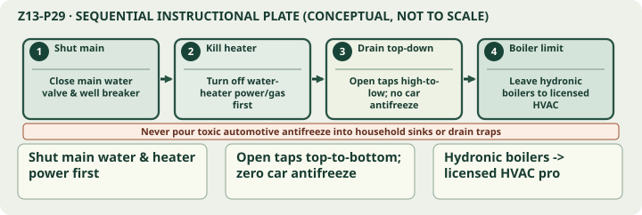

Z13-P29 · Home survival and utilities · New manuscript
Follow controlled water-line draining limits during prolonged winter heating loss
Reduce catastrophic pipe-burst damage when abandoning an unheated sub-zero home while avoiding boiler, water-heater, or gas-appliance damage.
When it applies · Prolonged winter power/furnace outages where indoor temperatures approach freezing and occupants must relocate.
Equipment · Main water shutoff access, water-heater/boiler manufacturer manuals, buckets, and licensed plumber contact.

Actions
- If indoor heat cannot be maintained and indoor air drops toward freezing before evacuation, shut off the main water supply (and private well pump breaker), turn off electricity or gas pilot/supply to the water heater per its manual, and open all faucets from the highest floor down to the lowest basement tap to drain gravity lines.[U10, U08]
- Flush toilets once to empty tanks (leaving bowl water traps per local winterization advice—never pour toxic automotive antifreeze into household plumbing; only food-grade RV/potable plumbing antifreeze is rated for drain traps if used).[U10, U08]
- Do NOT attempt improvised draining of pressurized hydronic hot-water heating boilers, radiant floor loops, or steam systems without exact manufacturer or licensed HVAC/plumber procedures—improper draining cracks cast-iron sections and damages pumps.[U10, U11]
Failure recognition · Abandoning an unheated Minnesota house for three days at minus 15°F without shutting off the main water supply, or pouring toxic ethylene-glycol car antifreeze into kitchen sinks.[U10, U08]
Verify · Confirm main supply shut off, water-heater power/heat secured per manual, faucets opened top-to-bottom, and complex boilers escalated to HVAC pros.[U10, U08]
Stop or change course · Already-frozen main valves, leaking gas water heaters, or pressurized hydronic boilers require licensed plumbing/HVAC intervention rather than forceful DIY wrenching.[U10, U11]
Evidence and editorial notes
- U08 · FEMA / Ready.gov · Water Storage and Emergency Supply (current web edition)
- Section: Water > Emergency Household Supply, Shutoff, and Alternate Indoor Sources · Conditions: Household plumbing disruptions, water-main breaks, or winter freeze outages
Support: Store at least 1 gallon per person per day for several days (two weeks where feasible for extended outages), know the main water shutoff valve location, and recognize clean indoor water-heater reserve boundaries only after shutting off power/gas and confirming supply safety.
Limitations: Never use water from radiators, hot-water boilers, or chemically treated toilet tanks for drinking. · Conflicting evidence: None; complements CDC-S (W06, W14).
Editorial note: Covers household water shutoffs, pipe-freeze prevention, and safe indoor reserves. · Specialist reviewer: Plumbing safety and drinking-water public health
Primary source · checked 2026-11-24 - U10 · FEMA / Ready.gov · Winter Weather (current web edition)
- Section: Winter Household Resilience > Frozen Pipes, Ice Dams, and Heating Loss · Conditions: Sub-zero Upper Midwest winter outages and prolonged cold snaps
Support: Prevent burst pipes by insulating exposed lines, keeping cabinet doors open, shutting off and draining water lines per plumbing guidance if indoor temperatures drop toward freezing, and consolidating household occupants into one safe insulated interior room.
Limitations: Draining hydronic boilers or gas water heaters requires exact manufacturer/plumber steps to prevent equipment damage or gas leaks. · Conflicting evidence: None; regionalizes winter home defense for Minnesota conditions.
Editorial note: Anchors winter pipe protection, thermal-zone consolidation, and abandonment thresholds. · Specialist reviewer: Residential plumbing, HVAC, and cold-weather emergency management
Primary source · checked 2026-11-24 - U11 · U.S. DOT PHMSA · Pipeline Leak Recognition and What to Do (Current web edition)
- Section: What to DO; What Not to Do · Conditions: Suspected gas or pipeline leak
Support: Leave the affected area and call 911 and the provider from safety. Avoid spark sources and leave valve and restoration decisions to authorized responders.
Limitations: Do not transpose outdoor hazmat sheltering directions to a gas leak inside the dwelling. · Conflicting evidence: See A02 claim audit for boundaries.
Editorial note: Establishes strict utility-leak evacuation and licensed restoration gates. · Specialist reviewer: Gas utility safety and fire service
Primary source · checked 2026-11-25
Source lineage · FEMA Ready.gov Winter Weather; new manuscript · Classification · New manuscript.